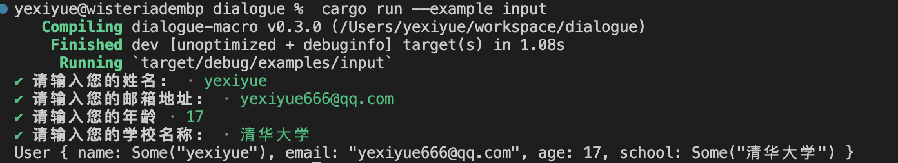
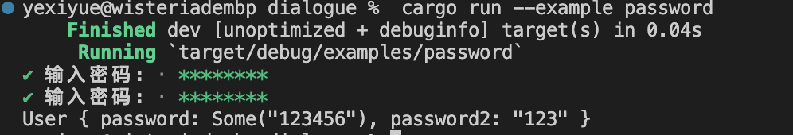
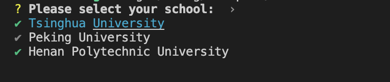
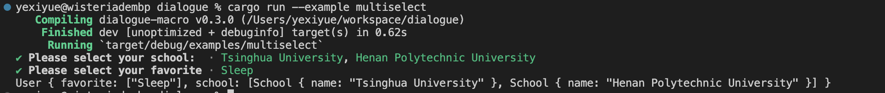
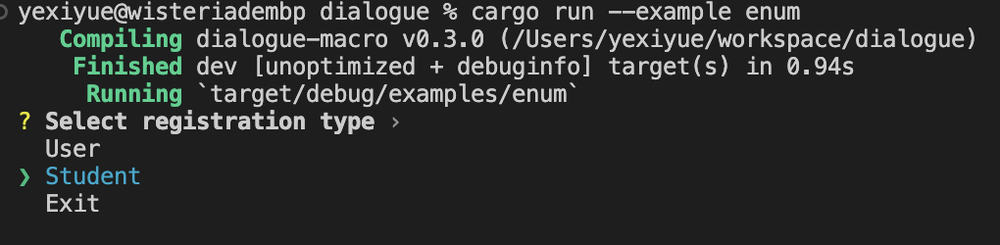
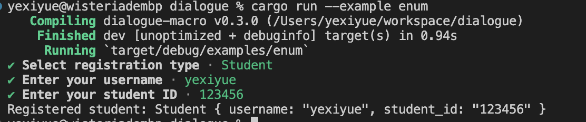
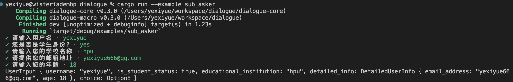

Introduction


dialogue-macro 是一款使用 Rust 语言设计的宏库，致力于无缝对接并增强 dialoguer 库的功能表现，采用声明式的编程模式简化命令行提示界面的构建流程。该库在实现结构化、层次化的用户交互体验上表现出色，尤其适应于命令行应用程序中各类复杂信息收集和配置选项设定的需求。
核心特性概览：
-
结构体与枚举支持： dialogue-macro 允许开发者通过派生宏 (
#[derive(Asker)]和#[derive(EnumAsker)]) 将自定义结构体及枚举类型转换为功能完备的命令行询问器，从而依据预定义的字段或枚举成员进行高效的数据采集。 -
嵌套式交互逻辑： 提供了对嵌套子询问器的支持，通过在结构体成员上标注
#[asker(SubAsker)]属性，可实现多层次、递进式的用户交互过程，以应对不同场景下的深度信息获取需求。 -
主题定制能力： 支持主题设置，如示例中的
dialogue_macro::ColorfulTheme，使得开发者能够根据实际需要选择和应用不同的视觉风格，提升命令行提示界面的用户体验和可读性。
文档中所展示的示例代码片段，可以在GitHub仓库的examples目录下找到并获取。
快速开始
首先通过cargo添加dialogue-macro依赖:
cargo add dialogue-macro
然后在您的Rust代码中导入该crate:
#![allow(unused)] fn main() { use dialogue_macro::Asker; }
接下来,使用#[derive(Asker, Debug)]宏来为需要交互式输入的结构体派生相关trait:
#![allow(unused)] fn main() { #[derive(Asker, Debug)] struct User { #[input(prompt = "请输入您的名字:")] name: String, age: u32, } }
#[derive(Asker)]会自动为结构体实现asker()构造器方法。对于带有#[input(prompt = "...")]属性的字段,您可以直接调用同名方法(无需再传入提示文本作为参数)。
最后,使用派生的方法链式调用来获取用户输入:
fn main() { let user = User::asker() .name() .age("请输入您的年龄:") .finish(); println!("{:?}", user); }
运行该程序,您将看到类似以下的交互式提示:

Guide
在接下来的章节中,我们将详细介绍Asker提供的5种常用命令行交互方式:
- Input - 用于获取常规文本输入。
- Password - 适用于需要保密信息（如密码）的安全输入场景。
- Confirm - 获取用户对某一问题的确认或否定响应。
- Select - 提供选项列表供用户选择单个项。
- Multiselect - 允许用户从选项列表中选择多个项目。
每种交互方式都支持以下几个通用参数:
prompt: 交互提示信息default: 默认值with_default: 是否在同名方法中传入default参数，默认为false
如果在结构体字段上指定了prompt,那么在调用同名方法时就无需再传入prompt参数。
如果字段声明了default属性,那么在交互提示时会显示该默认输入值。
注意：
with_default的优先级高于default,意味着如果两者冲突,将使用同名方法的参数。
Input
Input用于接收用户的文本或数字输入。
定义Input字段
使用dialogue_macro::Asker宏为结构体派生trait时，框架会自动将以下字段类型识别为Input输入字段:
String- 基本数字类型，如
i32、u32、usize等
如果某个字段为非必填项，可将其声明为Option<String>或对应的Option<数字类型>。这样在调用finish()方法时，如果没有调用该同名方法，程序不会panic。
配置选项
- prompt: 指定提示用户输入信息的文本内容。
- default: 设置字段的默认值，在询问用户时显示该默认值供参考或直接采用。
- with_default: 布尔值参数，当设为
true时，在调用相应方法时需要传递默认值。
示例
在以下的 Rust 代码示例中，我们利用 dialogue_macro 库来实现一个用户交互式信息收集的场景。定义了一个结构体 User，它包含四个字段：name、email、age 和 school，分别用于收集用户的姓名、电子邮件地址、年龄和学校信息。
#![allow(unused)] use dialogue_macro::Asker; #[derive(Asker, Debug)] struct User { name: Option<String>, #[input(prompt = "请输入您的邮箱地址: ", with_default = true)] email: String, #[input(with_default = true)] age: u8, #[input(prompt = "请输入您的学校名称: ", default = "清华大学")] school: Option<String>, } fn main() { let user = User::asker() .name("请输入您的姓名: ") .email("yexiyue666@qq.com".to_string()) .age("请输入您的年龄", 17) .school() .finish(); println!("{:?}", user); }

在上述示例中：
name字段是一个可选字符串类型，用户可以选择是否输入姓名。email字段要求用户输入电子邮件地址，并支持传入默认值，通过.email()方法传递。age字段用于获取用户年龄，也支持默认值，此处默认值为17岁。school字段允许用户输入学校名称，同时提供了默认值"清华大学"。
在 main 函数中：
- 我们初始化了
User结构体的询问器实例，并为每个字段指定了相应的提示信息和/或默认值。 - 当运行程序时，将按照定义顺序逐个展示各个字段的提示信息，并依据是否设置了默认值进行交互式信息收集。
- 收集完成后，
user.finish()返回一个包含了用户输入信息的User结构体实例，并将其输出至控制台。
Password
Password用于获取用户的密码输入,它会在终端中隐藏用户输入的字符。
定义Password字段
要将字段定义为Password类型,需要使用#[password(...)]属性对字段进行标注,字段类型必须为String或Option<String>。与Input类似,如果字段为非必填项,可以声明为Option<String>。
Password不支持default和with_default参数。
配置选项
- prompt: 指定提示用户输入密码的文本内容。
- confirmation: 指定提示用户再次确认密码的文本内容。
- mismatch: 当用户两次输入的密码不匹配时显示的错误信息。
示例
#![allow(unused)] use dialogue_macro::Asker; #[derive(Asker, Debug)] struct User { // 普通密码输入字段，用户可选择是否输入密码 #[password()] password: Option<String>, // 带确认和错误提示的密码输入字段 #[password( prompt = "输入密码:", confirmation = "再次输入密码:", mismatch = "两次输入的密码不匹配" )] password2: String, } fn main() { let user = User::asker() .password2() .password("输入密码:") .finish(); println!("{:?}", user); }


在这个例子中：
password2字段要求用户提供一个密码，并需要再次确认输入以确保正确无误。如果两次输入的密码不匹配，则会显示预设的错误信息“两次输入的密码不匹配”。
在 main 函数中：
- 我们首先初始化了
User结构体的询问器实例，并按照逻辑顺序依次收集用户的密码输入信息。 - 当运行程序时，会根据定义的提示信息提示用户输入密码，并检查密码确认过程中的匹配性。
- 收集完成后，
.finish()方法返回一个包含了用户输入密码信息的User结构体实例，并将其输出至控制台。
Confirm
Confirm 用于获取用户的布尔值确认输入(是或否)。
定义 Confirm 字段
要将字段定义为 Confirm 类型,只需将其声明为 bool 或 Option<bool> 类型。与 Input 类似,如果字段为非必填项,可以声明为 Option<bool>。
配置选项
- prompt: 指定提示用户进行确认的文本内容。
- default: 设置字段的默认值(
true或false),在询问用户时显示该默认值供参考或直接采用。 - with_default: 布尔值参数,当设为
true时,在调用相应方法时需要传递默认值。
示例
#![allow(unused)] use dialogue_macro::Asker; #[derive(Asker, Debug)] struct User { boy: bool, #[confirm(prompt = "Are you a student?", with_default = true)] student: Option<bool>, } fn main() { let user = User::asker() .boy("Are you a boy?") .student(true) .finish(); println!("{:?}", user); }

在上述代码中：
User结构体中的boy字段是一个布尔类型变量，通过询问用户来确定其性别。student字段是一个具有默认值的可选布尔类型变量，通过#[confirm]宏提供了自定义确认提示 "Are you a student?"，默认情况下用户被假设为学生（值为true）。
在 main 函数中：
- 我们初始化了
User结构体的询问器实例，并分别为boy和student字段指定了提示信息和默认值。 - 当运行程序时，会依次显示预设的提示信息，并根据默认值进行交互式信息收集。
- 收集过程完成后，
.finish()方法返回一个包含了用户回答信息的User结构体实例，并将其输出至控制台。
Select
Select 用于从给定选项列表中让用户选择一项。
定义 Select 字段
要将字段定义为 Select 类型,需要使用 #[select(...)] 属性对字段进行标注。字段类型必须为 String 或实现了 ToString trait 的类型(T)或 Option<T>。
如果没有提供 options 配置选项,则需要在调用相应方法时传递选项列表。
注意：T类型也必须实现Clonetrait
配置选项
- prompt: 指定提示用户进行选择的文本内容。
- options: 包含选项列表的数组或向量,每个选项必须实现
ToStringtrait。 - default: 设置默认选中项的索引(从 0 开始)。
- with_default: 布尔值参数,当设为
true时,在调用相应方法时需要传递默认值的索引。
示例
#![allow(unused)] use dialogue_macro::Asker; #[derive(Asker, Debug)] struct User { #[select(prompt = "Please select your sex", options = ["Male", "Female", "Other"], default = 1)] sex: String, #[select( prompt = "Please select your school: ", default = 1, options = [ School { name: "Tsinghua University".to_string() }, School { name: "Peking University".to_string() }, School { name: "Henan Polytechnic University".to_string() } ], with_default = true )] school: Option<School>, #[select()] favorite: String, } // 定义表示学校的结构体，实现Debug和Clone特质 #[derive(Debug, Clone)] struct School { name: String, } // 实现ToString trait，将School结构体转换为字符串形式 impl ToString for School { fn to_string(&self) -> String { self.name.clone() } } fn main() { let options = vec!["Eat".to_string(), "Sleep".to_string(), "Coding".to_string()]; let user = User::asker() .sex() .school(2) .favorite("Please select your favorite:", &options) .finish(); println!("{:?}", user); }

在此示例中：
sex字段是一个多选类型，提供了预设的性别选项，默认选择“Female”。school字段也是一个多选类型，使用了自定义的School结构体来描述学校选项，并指定了默认值的索引为2（对应于“Henan Polytechnic University”）。favorite字段同样为多选类型，但在调用.favorite()方法时需要传入选项列表和提示信息。
在 main 函数中：
- 我们首先定义了一个表示用户最喜欢的活动选项列表。
- 然后初始化了
User结构体的询问器实例，并分别为sex、school和favorite字段指定了默认值或选项列表。 - 当运行程序时，会按照顺序展示预设的提示信息，并根据提供的默认值和选项进行交互式信息收集。
- 收集完成后，
.finish()方法返回一个包含了用户回答信息的User结构体实例，并将其输出至控制台。
Multiselect
Multiselect 用于从给定选项列表中让用户选择多项。
定义 Multiselect 字段
要将字段定义为 Multiselect 类型,需要使用 #[multiselect(...)] 属性对字段进行标注,字段类型必须为 Vec<T>(其中 T 实现了 ToString trait)。
注意:
Multiselect不支持Option<Vec<T>>类型。T类型也必须实现Clonetrait
配置选项
- prompt: 指定提示用户进行多选的文本内容。
- options: 包含选项列表的数组或向量,每个选项必须实现
ToStringtrait。 - default: 设置默认选中项的索引列表(从 0 开始)。
- with_default: 布尔值参数,当设为
true时,在调用相应方法时需要传递一个布尔值数组,其中true表示选中对应索引的选项。传入的布尔值数组长度必须与选项列表长度相同。
示例
#![allow(unused)] use dialogue_macro::Asker; #[derive(Asker, Debug)] struct User { #[multiselect(prompt = "Please select your favorite", options = ["Eat", "Sleep", "Code"], default = [1])] favorite: Vec<String>, #[multiselect( prompt = "Please select your school: ", with_default = true, options = [ School { name: "Tsinghua University".to_string() }, School { name: "Peking University".to_string() }, School { name: "Henan Polytechnic University".to_string() } ] )] school: Vec<School>, } // 定义表示学校的结构体，并实现Debug和Clone特质 #[derive(Debug, Clone)] struct School { name: String, } // 实现ToString trait，将School结构体转换为字符串形式以便于展示 impl ToString for School { fn to_string(&self) -> String { self.name.clone() } } fn main() { let user = User::asker() .school(&[true, false, true]) .favorite() .finish(); println!("{:?}", user); }

在这个示例中：
favorite字段是一个多选类型，提供三个预设选项，默认选择了“Sleep”。school字段也是一个多选类型，但其选项是由自定义的School结构体实例表示的，且支持默认选择。通过传入一个布尔值数组来指定哪些学校是默认被选中的，数组长度必须与提供的学校选项列表长度相同。
在 main 函数中：
- 首先初始化了
User结构体的询问器实例，并分别为school和favorite字段指定了默认选择或直接使用默认选项。 - 当运行程序时，会按照顺序显示预设的提示信息，并根据设置的默认值进行交互式信息收集。
- 收集完成后，
.finish()方法返回一个包含了用户选择信息的User结构体实例，并将其输出至控制台。
Advanced
接下来，我们将探讨dialogue_macro库中的两个高级特性：EnumAsker和Build特质。
EnumAsker 宏
EnumAsker正如其名，扩展了Asker功能以支持枚举类型的交互式输入。通过派生EnumAsker，可以轻松地为枚举类型定义一组选项，并在命令行中呈现给用户选择。这样，开发者无需手动处理枚举值的获取，而是在运行时自动根据用户的响应填充枚举字段。
EnumAsker修饰的枚举自动实现Build trait。
Build 特质
Build特质的设计目的是简化Asker接口的使用过程，特别是针对那些需要嵌套询问逻辑的情况。通过实现Build特质，子结构体或枚举能够拥有一个自包含的构建流程，只需调用.build()方法就能顺序执行所有的询问操作直至完成信息收集。这意味着不再需要分别调用每个字段对应的asker()方法以及最后的finish()方法来结束整个询问过程。对于具有嵌套结构的复杂用户输入场景，这一特质大大提升了代码的简洁性和可读性。所有作为子询问器使用的结构体都应该实现Build特质，以便于与顶层询问器进行整合。
EnumAsker
EnumAsker 是一个针对枚举类型的交互式询问功能宏，用于在命令行界面中提供用户选择。使用此宏时需要注意，被修饰的枚举变体不能是带有命名字段的结构体类型，而应该采用元组或者无数据变体的形式。
不支持的枚举定义示例：
#![allow(unused)] fn main() { #[derive(EnumAsker)] enum Test { A { name: String, }, } }
上述代码中的 Test 枚举包含名为 A 的变体，该变体内含一个名为 name 的字符串字段。这种带命名字段的结构体风格并不符合 EnumAsker 的使用规范。
支持的枚举定义形式：
- 元组列表形式：
#![allow(unused)] fn main() { #[derive(EnumAsker)] enum Test { A(Student, User), B(User), } }
在这种情况下，Test 枚举的变体以元组形式出现，如 A(Student, User) 和 B(User)，这些变体可以包含其他结构体类型的组合，这完全满足 EnumAsker 的使用条件。
- 空或无数据变体形式：
#![allow(unused)] fn main() { #[derive(EnumAsker)] enum Test { A, B, C, } }
同时，EnumAsker 也支持仅包含空或无数据变体（例如 A、B 和 C）的枚举定义。
配置选项说明
EnumAsker 提供了两种级别的配置项：枚举级别属性和变体级别属性。
枚举级别属性：
- prompt: 指定用户在进行选择时的提示信息文本。
- default: 设置默认选择项，其值应为枚举变体名称。
- theme: 设定对话框主题样式，具体主题将在后续部分详细说明。
#![allow(unused)] fn main() { #[derive(Debug, EnumAsker)] #[asker( prompt = "选择注册类型", default = "Student", theme = "dialoguer::theme::ColorfulTheme" )] enum Register { ... } }
变体级别属性：
- label: 用于配置各个选择项在命令行界面上显示的标签文本。
#![allow(unused)] fn main() { #[derive(Debug, EnumAsker)] #[asker(...)] enum Register { #[asker(label = "注册为普通用户")] User(User), #[asker(label = "注册为学生")] Student(Student), #[asker(label = "退出")] Exit, } }
注意：
EnumAsker宏不会实现asker()方法，而是自动实现Build trait，通过调用build()方法即可收集用户输入。
示例
定义结构体与实现Build trait
首先定义了两个结构体：User 和 Student，分别用于存储普通用户和学生的信息。这两个结构体均派生了 Asker 和 Clone 特质，并实现了 Build trait：
#![allow(unused)] fn main() { #[derive(Debug, Asker, Clone)] struct User { #[input(with_default = true)] username: String, email: String, } impl Build for User { fn build() -> Self { // 用户名提供默认值，邮件无默认值 Self::asker() .username("Enter your username", "default_username".to_string()) .email("Enter your email") .finish() } } #[derive(Debug, Asker, Clone)] pub struct Student { username: String, student_id: String, } impl Build for Student { fn build() -> Self { // 分别询问用户名和学生ID Self::asker() .username("Enter your username") .student_id("Enter your student ID") .finish() } } }
利用EnumAsker处理枚举选项
接下来，我们定义了一个名为 Register 的枚举类型，它使用了 EnumAsker 宏：
#![allow(unused)] fn main() { #[derive(Debug, EnumAsker)] #[asker( prompt = "Select registration type", default = "Student", theme = "dialoguer::theme::ColorfulTheme" )] enum Register { // 普通用户注册选项 #[asker(label = "Register as a regular user")] User(User), // 学生注册选项 #[asker(label = "Register as a student")] Student(Student), // 退出程序的选项 #[asker(label = "Exit")] Exit, } }
在这个枚举中，每个变体都关联到一个结构体实例，并通过 label 参数指定了命令行界面中的显示文本。此外，我们还设置了 prompt 作为主提示信息、default 为默认选项。
主函数逻辑
在 main 函数中，我们创建并获取用户的选择结果：
fn main() { let choice = Register::build(); match choice { Register::User(user) => println!("Registered regular user: {:?}", user), Register::Student(student) => println!("Registered student: {:?}", student), Register::Exit => println!("Exiting..."), } }
当运行程序时，将按照以下流程执行：
- 根据
EnumAsker设置显示交互式菜单，用户可以选择注册类型（普通用户、学生或退出）。 - 根据用户的选项，调用相应结构体的
build()方法收集用户信息。 - 根据匹配结果输出已注册的用户或学生信息，若选择退出则打印退出信息。


SubAsker
SubAsker 是 dialogue_macro 库中用于标记结构体字段的属性，它允许将一个已实现 Build 特质的结构体或枚举类型嵌入到另一个结构体中，并作为一个子询问器进行交互式数据收集。
以下代码片段展示了如何在 UserInput 结构体中使用 SubAsker 属性：
#![allow(unused)] fn main() { #[derive(Debug, Asker)] struct UserInput { // 其他用户输入字段... // 使用 SubAsker 标记字段以启用子询问器功能 #[asker(SubAsker)] detailed_info: DetailedUserInfo, // 同样使用 SubAsker 对枚举类型进行嵌套询问 #[asker(SubAsker)] choice: EnumSelection, } }
重要提示：
为了确保 SubAsker 正常工作，被该属性修饰的字段所对应的结构体或枚举类型必须实现 Build 这个特质。这样，在调用这些字段时，会自动触发其内部的 .build() 方法，从而逐层展开并执行相应的命令行交互逻辑。例如，在上面的示例中，DetailedUserInfo 和 EnumSelection 都需要实现 Build 特质。
示例
在本示例中，我们将展示如何通过 dialogue_macro 库中的 SubAsker 属性以及相关的 Asker 和 Build 特质来实现结构化的、层次分明的命令行用户交互流程。
首先，我们定义了一个名为 UserInput 的结构体，并使用 #[derive(Asker)] 和 #[asker(theme = "...")] 宏对其进行装饰，以便于在命令行界面中进行信息收集。同时，结构体中包含两个字段：detailed_info 和 choice，它们都被标记为 #[asker(SubAsker)]，表示这两个字段将作为一个子询问器（SubAsker）来处理更深层次的用户输入。
#![allow(unused)] fn main() { use dialogue_macro::{Asker, Build, EnumAsker}; #[derive(Debug, Asker)] #[asker(theme = "dialogue_macro::ColorfulTheme")] struct UserInput { username: String, is_student_status: bool, educational_institution: String, #[asker(SubAsker)] detailed_info: DetailedUserInfo, #[asker(SubAsker)] choice: EnumSelection, } }
接下来，我们定义了两个用于嵌套询问的类型：
- DetailedUserInfo 结构体，其中包含了用户的电子邮件地址和年龄信息。这个结构体实现了
Debug、Clone和Asker特质，并且为了配合SubAsker使用，还额外实现了Build特质。在impl Build for DetailedUserInfo中，我们定义了.build()方法以顺序获取用户邮箱地址和年龄。
#![allow(unused)] fn main() { #[derive(Debug, Clone, Asker)] struct DetailedUserInfo { email_address: String, age: u8, } impl Build for DetailedUserInfo { fn build() -> Self { Self::asker() .email_address("请提供您的邮箱地址") .age("请输入您的年龄") .finish() } } }
- EnumSelection 枚举，它包含了三个选项（OptionD、OptionE、OptionF）。此枚举不仅实现了
Debug和Clone特质，同时也派生了EnumAsker特质，这意味着它可以作为子询问器呈现给用户选择。
#![allow(unused)] fn main() { #[derive(Debug, EnumAsker, Clone)] enum EnumSelection { OptionD, OptionE, OptionF, } }
最后，在主函数中，我们实例化了 UserInput 并依次调用各个字段对应的询问方法：
fn main() { let collected_user_input = UserInput::asker() .username("请输入用户名") .is_student_status("您是否是学生身份?") .educational_institution("请输入您的学校名称") // 调用 SubAsker 来收集详细的用户信息 .detailed_info() // 调用另一个 SubAsker 来让用户从枚举选项中做出选择 .choice() // 收集所有用户输入并结束询问过程 .finish(); println!("{:?}", collected_user_input); }
通过这种方式，当运行程序时，用户将会按照结构化的层级顺序依次输入相关信息，从而实现复杂而有序的命令行交互体验。


Theme
在使用 dialogue_macro 库中的 Asker 和 EnumAsker 特性修饰结构体或枚举时，可以通过在派生宏中指定 theme 参数来自定义用户交互界面的主题风格。主题需要实现 dialoguer::theme::Theme 和 Default 两个特质。
注意：
如果不特别指定 theme 参数，则默认采用 dialogue_macro::ColorfulTheme 这一彩色主题。
示例
下面的示例展示了如何使用 dialoguer 库提供的 ColorfulTheme 彩色主题：
#![allow(unused)] use dialogue_macro::Asker; #[derive(Asker, Debug)] // 指定主题色 #[asker(theme = "dialoguer::theme::ColorfulTheme")] struct User { #[multiselect(prompt = "Please select your favorite", options = ["Eat", "Sleep", "Code"], default = [1])] favorite: Vec<String>, #[multiselect( prompt = "Please select your school: ", with_default = true, options = [ School { name: "Tsinghua University".to_string() }, School { name: "Peking University".to_string() }, School { name: "Henan Polytechnic University".to_string() } ] )] school: Vec<School>, } #[derive(Debug, Clone)] struct School { name: String, } impl ToString for School { fn to_string(&self) -> String { self.name.clone() } } fn main() { let user = User::asker() .school(&[true, false, true]) .favorite() .finish(); println!("{:?}", user); }